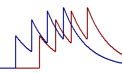
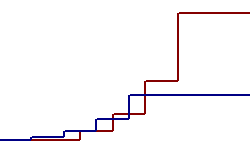

A while back, we set out to help LinkedIn members find interesting discussions that take place in LinkedIn groups. Interesting discussions are usually active, so we thought we'd show members a summary of discussions, with more active discussions closer to the top of the summary. Activity is represented by requests that come to our web servers, when people contribute to a discussion or click to say they like it. We needed a formula to rank discussions, based on this stream of actions.
We knew discussions with more recent activity should rank higher, so we wanted velocity in the formula. My first thought was to use exponential moving averages. For a sequence of four actions in each of two discussions, they go like this:
The red discussion gets a higher final score, because its activity is more recent. Actions that occurred in the past get less weight than an action that occurs now. It's something like velocity, and it also remembers old activity. Rankings don't change until actions occur.
But this formula doesn't scale up well. The thing is, every discussion's score decays with the passage of time, so it's hard to update rankings on the fly as actions occur. You could update every score every time period, but there are lots of discussions and we'd prefer a short time period. You could update the scores of competing discussions when someone acts on any one of them, but that's still expensive, for lots of discussions and frequent actions. The amount of hardware you need shoots up as traffic grows, because concurrent actions interfere with each other. You start to see simultaneous actions on different discussions, all trying to update the same scores. It takes time and processing power to coordinate them.
A more scalable formula gives more weight to current actions, instead of less weight to past actions. For the same sequence of actions, the scores go like this:
A discussion's score doesn't decay with time; it remains constant when there's no activity. When an action occurs, you update the score of just one discussion, and then rank it compared to the old, unchanged scores of its competitors. The ranking comes out the same as with moving averages, and the formula is more scalable.
But this formula has a different problem: the numbers get really big. As time goes by, the weight of a new action increases exponentially, which is scary fast. Floating point arithmetic helps, but it runs out of gas eventually. We figured scores would overflow a Java double in about nine months, and overflow a number in our Oracle database about three months later. I thought we could crack the Java limit in nine months, but the database looked harder. We were going to build up a big database, containing lots of scores. If we changed the storage system, we'd have to grovel through all those scores and convert them, while simultaneously processing actions and updating rankings. (We don't shut down for maintenance, as a rule.) Yuck.
We thought about storing the printable form of numbers as strings in the database. Using scientific notation, we'd have plenty of room to grow. But we couldn't use the database to find, say, the top ten scores in a group. The database would sort the strings alphabetically, not numerically, so we'd get wrong answers like 10 < 2 (because the string "10" comes before "2" alphabetically). I thought we could cook up a different string format that would sort like the numbers, the same way UTF-8 byte strings sort the same as the characters they represent. But I couldn't think of a format that would handle a vast range of numbers.
It was time to get help. I asked a LinkedIn connection to introduce me to a mathematician she knows, and I found some LinkedIn groups devoted to mathematics and posed my question to their members. It sparked some creative thinking and lively discussions. In no time, somebody casually mentioned that some universal codes are lexically ordered. That cracked the problem. We could store a number in binary floating point, with the Levenshtein coding of the exponent followed by the fractional part of the significand. You can see the gritty details and the software here.
Here's how the system works. Our web servers send a stream of actions to a service that updates scores and rankings. Scores are stored as encoded strings, which are sorted to get the rankings. When a web server needs to show a summary, it calls a service that uses the cached ranking to put together the list of discussions. If the ranking isn't in the cache, the group service queries it from the database and caches it.
We launched this system using Java double for calculating
scores. Six months later, I went back and replaced Java
double with Apfloat,
an awesome implementation of big numbers. We hit a few bugs
in our code, but the design held up fine.
Today, the scoring service runs on a small cluster of 4 servers, processing about 500 actions per second at peak. CPUs are about 30% busy at peak, including the activity of several unrelated servers that run on the same machines. The database contains scores for about 500,000 active discussions.
Here's some sample data from the database:
| DISCUSSION_ID | SCORE | COMMENTS | COMMENT_VELOCITY | LIKES | LIKE_VELOCITY |
| ANET:S:70500170 | 40a99db36b0f0336473 | 2 | bf563e5cbcbf6ae14028 | ||
| ANET:S:43285584 | 40a9a7bd22e1d9037266 | 2 | bf5632a72f1833c17b98 | 3 | bf52fa22ae671d4484a8 |
| ANET:S:66831722 | 40a9ada6f06efc7ac4e | 3 | bf56264be43599890cac | 1 | bf562ee03bdd3f85446c |
In decimal notation, those values are approximately:
| DISCUSSION_ID | SCORE | COMMENTS | COMMENT_VELOCITY | LIKES | LIKE_VELOCITY |
| ANET:S:70500170 | -1.02058819x10554 | 2 | 8.164705524x10548 | ||
| ANET:S:43285584 | -3.096145439x10552 | 2 | 1.548072719x10547 | 3 | 1.005358555x10423 |
| ANET:S:66831722 | -4.13625899x10551 | 3 | 1.897047639x10545 | 1 | 4.391925137x10546 |
We changed the scoring formula a few times.
The ranking works pretty well. We know the system encourages members to visit their groups more frequently. As usual, we'll run with it until we think of something better.
- John Kristian